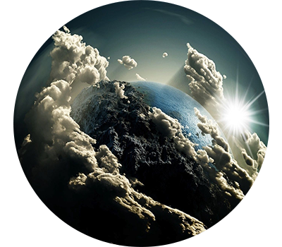
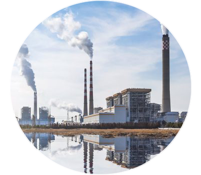

Šta je globalno zagrevanje?
Tokom poslednjih 50 godina, prosečna globalna temperatura porasla je po najbržoj stopi u zapisanoj istoriji. A stručnjaci vide da se trend ubrzava: Sve osim jedne od 16 najzgodnijih godina u NASA-inoj 134-godišnjoj evidenciji dogodile su se od 2000. godine. Pobijači klimatskih promena tvrdili su da je došlo do „pauze“ ili „usporavanja“ u porastu globalnih temperatura, ali nekoliko nedavnih studija, uključujući i rad iz 2015. objavljen u časopisu Science, opovrgavalo je ovu tvrdnju.
Smanjivanje opasnih klimatskih promena zahteva veoma duboko smanjenje emisija, kao i upotrebu alternativa fosilnim gorivima širom sveta. Dobra vest je da smo započeli preokret: emisija CO2 zapravo se smanjila od 2005. do 2014. godine, delom zahvaljujući novoj, energetski efikasnoj tehnologiji i upotrebi čistijih goriva. Naučnici nastavljaju da razvijaju nove načine modernizacije elektrana, stvaranja čistije električne energije i sagorevanja manje benzina dok se vozimo. Izazov je biti siguran da će se ta rešenja koristiti i široko usvojiti.
Koji su drugi efekti globalnog zagrevanja?
Svake godine naučnici saznaju više o posledicama globalnog zagrevanja, a mnogi se slažu da će verovatno doći do posledica po životnu sredinu, ekonomiju i zdravlje ako se nastave trenutni trendovi. Evo samo naglog šta možemo da se radujemo:
Topljenje ledenjaka, rano otapanje snijega i jake suše uzrokovat će dramatičnije nestašice vode i povećati rizik od požara na američkom zapadu.
Rast nivoa mora dovesti će do obalnih poplava na Istočnoj obali mora, posebno na Floridi, i u drugim oblastima kao što je Meksički zaljev.
Šume, farme i gradovi suočiće se sa novim problematičnim štetočinama, toplotnim talasima, jakim pljuskovima i povećanim poplavama. Svi ti faktori će oštetiti ili uništiti poljoprivredu i ribarstvo.
Povreda staništa kao što su koralni grebeni i alpske livade moglo bi odvesti mnoge biljne i životinjske vrste do istrebljenja.
Alergije, astma i epidemije zaraznih bolesti postaće češći zbog povećanog rasta amputa, koje proizvode polen, većeg nivoa zagađenja vazduha i širenja uslova povoljnih za patogene i komarce.
Pitate se kako zaustaviti globalno zagrevanje?
Smanjite sopstveni otisak ugljenika prateći nekoliko jednostavnih koraka. Učinite da štednja energije bude dio vaše svakodnevne rutine i vaših odluka kao potrošača. Kada kupujete nove uređaje poput frižidera, mašina za pranje i sušara, tražite proizvode sa vladinom oznakom Energi Star; oni ispunjavaju viši standard za energetsku efikasnost od minimalnih saveznih zahteva. Kada kupujete automobil, tražite automobil sa najvećom kilometražom gasa i najmanjom emisijom izduvnih gasova. Takođe možete smanjiti svoje emisije javnim prevozom ili parkiranjem automobila ako je to moguće. I dok su novi savezni i državni standardi korak u pravom smjeru, treba učiniti mnogo više. Izrazite svoju podršku klimatskim i klimatskim pripremama prilagođenim klimatskim promenama i recite svojim predstavnicima da prelazak sa prljavih fosilnih goriva na čistu energiju treba da bude glavni prioritet - jer je to od vitalnog značaja za izgradnju zdravih, sigurnijih zajednica.

Posljednjih godina Kina je preuzela vodeću ulogu u globalnom zagrijavanju ,zagađujući i stvarajući oko 28 posto svih emisija CO2. Sjedinjene Države dolaze na drugo mesto. Uprkos tome da čine samo 4 procenta svetske populacije, proizvode ogromnih 16 procenata svih svetskih emisija CO2 - koliko su Evropska unija i Indija (treće i četvrto mesto) zajedno. A Amerika je i dalje broj jedan, daleko po kumulativnim emisijama u poslednjih 150 godina. Odgovornost zemalja je važna za sve nas.
Kako je globalno zagrevanje povezano sa ekstremnim vremenom?
Naučnici se slažu da rastuće temperature Zemlje podstiču duže i toplije toplotne talase, češće suše, jače kiše i jače uragane. Zemljine okeanske temperature takođe postaju toplije - što znači da tropske oluje mogu pokupiti više energije. Tako bi globalno zagrevanje moglo pretvoriti, recimo, oluju kategorije 3 u opasniju oluju kategorije 4. U stvari, naučnici su otkrili da se učestalost uragana u severnom Atlantiku povećavala od početka 1980-ih, kao i broj oluja koje dostižu kategorije 4 i 5. Uticaj globalnog zagrevanja oseti se širom sveta. Ekstremni toplotni talasi poslednjih godina prouzrokovali su desetine hiljada smrti širom sveta. A u alarmantnom znaku događaja koji slede, Antarktika gubi oko 134 milijarde metričkih tona leda godišnje od 2002. Ova stopa bi se mogla ubrzati ako nastavimo sagorevanje fosilnih goriva sadašnjim tempom, kažu neki stručnjaci, uzrokujući da nivo mora padne na porasti nekoliko metara tokom narednih 50 do 150 godina.
Šta izaziva globalno zagrevanje?
Globalno zagrevanje nastaje kada se ugljen-dioksid (CO2) i drugi zagađivači vazduha i staklenički gasovi sakupljaju u atmosferi i apsorbuju sunčevu svetlost i solarnu radijaciju koji su odskakali od zemljine površine. Obično bi ovo zračenje pobeglo u svemir - ali ovi zagađivači, koji u atmosferi mogu da traju godinama i vekovima, zarobe toplotu i prouzrokuju topliju planetu. To je ono što se naziva efekat staklene bašte.